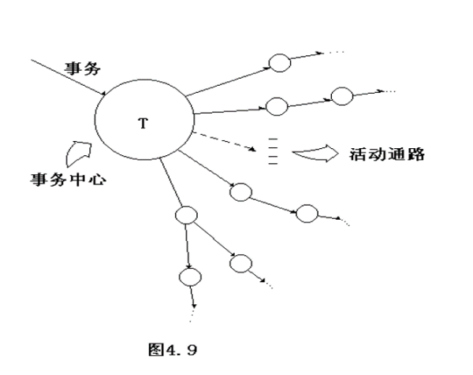

软件工程复习
十一月 29, 2020
软件工程复习
第三章 结构化分析
了解需求
为了了解用户需求，先进行与用户沟通，方法如下：
- 访谈
- 正式访谈
- 非正式访谈
- 简易的应用规格说明技术
结构化分析
结构化分析是一种建立模型的活动。目标为：
- 描述用户的需求
- 为软件设计工作奠定基础
- 定义一组需求
结构化分析分为三种模型：
- 数据模型：实体关系图（E-R图）
- 功能模型：数据流图（DFD图）
- 数据流图基本原则：子、父图平衡的原则
- 数据流图基本图形符号：加工、数据流、数据存储、外部实体
- 行为模型：状态转换图
PS：分析模型的核心是数据字典，可以使用IPO表表示数据流图
结构化分析具体步骤：
- 问题陈述
- 问题定义
- 可行化研究
- 需求分析：
- 需求分析是在可行话的基础上进行的
- 需求分析的主要目的是更详尽地定义系统应该完成的每一个逻辑功能
- 最后产生需求规格文档
第四章 结构化设计
了解需求后，开始用软件正确的实现这些需求。首先进行软件设计。
- 结构化分析与结构化设计的关系：结构化分析的结果为结构化设计提供了最基本的输入信息
软件设计的概念和原理
模块化
把程序划分为可独立命名且能独立访问的模块，每个模块完成一个子功能。
5条标准：
- 模块可分解性
- 模块可组装性
- 模块可理解性
- 模块连续性
- 模块保护性
抽象
逐步求精
信息隐藏：使一个模块内包含的信息对于不需要这些信息的模块来说是不能访问的。
模块独立
是上述步骤（模块化、抽象、逐步求精、信息隐藏）的直接结果
包括两个标准
- 耦合：是对一个软件结构内不同模块之间互连程度的度量。耦合强弱取决于模块间接口的复杂程度。
- 数据耦合：数据耦合是低耦合
- 控制耦合：中等程度的耦合，一般可以通过分解被数据耦合代替
- 特征耦合：把整个数据结构作为参数传递，通常可以处理的数据多于确实所需的数据。
- 公共环境耦合：当两个或多个模块通过一个公共数据相互作用时，他们之间的耦合而成为公共环境耦合。如：全程变量、共享的通信区、内存的公共覆盖区、任何存储介质上的文件、物理设备等。
- 内聚：标志一个模块内的各个元素彼此结合的紧密程度，是信息隐藏和局部化概念的自然拓展。理想内聚只做一件事
- 低内聚以下几种：
- 偶然内聚：如果一个模块完成一组任务，这些任务彼此之间即使有关系，关系也是很松散的，就叫做偶然内聚。比如一组语句在两处或多处出现，于是把这些语句作为一个模块以节省内存，这样就出现了偶然内聚的模块。
- 逻辑类聚：一个模块完成的任务在逻辑上属于相同或相似的一类
- 时间内聚：一个模块包含的任务必须在同一段时间内执行
- 中内聚有两种：
- 过程内聚：一个模块内的处理元素时相关的，而且必须以特定次序执行
- 通信内聚：模块中的所有元素都使用同一个输入数据和（或）产生一个输出数据
- 高内聚也有两种：
- 顺序内聚：一个模块内的处理元素和同一个功能密切相关，而且这些处理必须顺序中兴
- 功能内聚：模块内素有处理元素舒徐一个整体，完成一个单一的功能
- 低内聚以下几种：
启发规则
- 改进软件结构提高模块独立性
- 模块规模应该适中：不超过60行
- 深度、宽度、删除和扇入都应始终
- 扇出：一个模块直接控制（调用）的模块数目，扇出过大意味着模块过分复杂，需要控制和协调过多的下级模块
- 扇入：与上面相反
- 模块的作用域应该在控制域中
- 作用域：定义为受该模块内一个判定影响的所有模块的集合。
- 控制域：这个模块本身以及所有直接或间接从属于他的模块（类似于树的子节点）
- 力争降低模块接口的复杂程度
- 设计单入口单出口的模块
- 模块功能应该可以预测
表示软件结构的图形工具
- 层次图和HIPO图
- HIPO图就是在层次图的每个方框内加一个序号，每个方框都应该对应一个IPO图。
- 结构图
面向数据流的设计方法
概念：面向数据流的设计方法把信息流映射成软件结构，信息流的类型决定了映射的方法。
变换流：以外部数据进入以外部数据输出
事务流：根据输入数据的类型在若干个动作序列中选出一个来执行。

第五章 结构化实现
通常把编码和测试统称为实现
编码
编码之前的一项重要工作就是选择一门适当的程序设计语言，软件系统的绝大部分成本用在生命周期和维护阶段
编码风格
- 程序内部的文档：标识符。适当的注解等。
- 数据说明：标准化，即按照次序对变量进行说明。
- 语句构造：
- 语句分行
- 避免复杂的条件测试
- 减少“非”的使用
- 避免大量循环嵌套和条件嵌套
- 使用括号使表达式清晰
- 输入/输出：
- 对所用输入数据检验
- 检查输入项的合法性
- 使用数据结束标记
- 明确交互式输入请求，确定范围
- 输入格式尽量保持一致
- 良好的输出报表
- 输出数据加标志
- 效率
- 程序运行时间
- 存储器效率
- 输入输出效率
软件测试基础
- 测试目标：主要目标是暴露程序的错误
- 黑盒和白盒测试：
- 黑盒测试：不知道程序内部，程序接口式测试
- 白盒测试：知道程序内部，检测每条通路的正确性
- 测试的准则：略
- 流图：略
逻辑覆盖
白盒测试的一种技术
- 语句覆盖：至少每个语句应执行一次，不能判断判定表达式中每个条件取不同值得情况
- 判定覆盖：也叫分支覆盖，每个语句被执行且每个判定得每种可能都执行一遍
- 条件覆盖：在上面的基础上式判定表达式中的每个条件都取到各种可能的结果。虽然每个条件都能取到两个不同的值，但组合起来可能始终只取一个值。**因此，条件覆盖不包括判定覆盖，判定覆盖也不包括条件覆盖。
- 判定/条件覆盖：判定覆盖与条件覆盖的组合，是判定表达式的每个条件都取到各种可能的值，且每个判定表达式都取到各个可能的结果
- 条件组合覆盖：使每个判定表达式中的条件的各个可能组合都出现一次。
控制结构测试
基本路径测试
白盒测试技术
- 计算流图的环形复杂度：
- $$V(G) = E -N + 2$$,其中E是流图中边的条数，N是流图中节点数。
- $$V(G) = P + 1$$，P是流图中判定节点的数目。
- 确定线性独立路径的基本集合：略
- 设计可强制执行基本集合中每条路径的测试用例
条件测试
查看评论